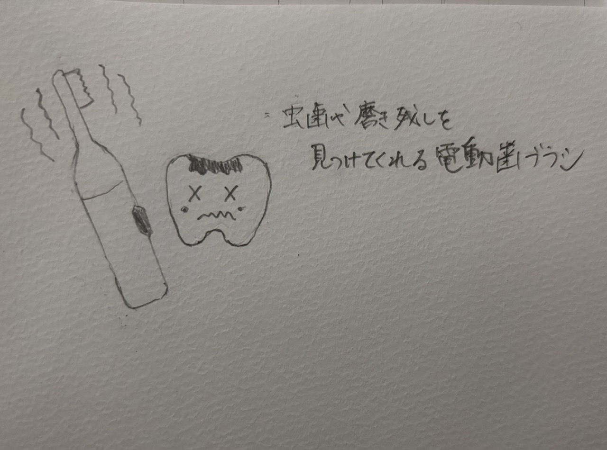

<h2>プログラミングで物を動かす</h2>
<h4>~どんなものがあるか？そのプログラミング的な思考の手順~</h4>


<h4>プログラミングでどのようなことができそうか</h4>



<h5>
<li>虫歯を見つけてくれる歯ブラシ</li>
</h5>
<div>
常にループし[if.虫歯や汚れを探知]で音で教えてくる<br>
また汚れを見つけると振動が強くなり念入りに磨くことができ<br>
虫歯を防ぐことができる。
</div>